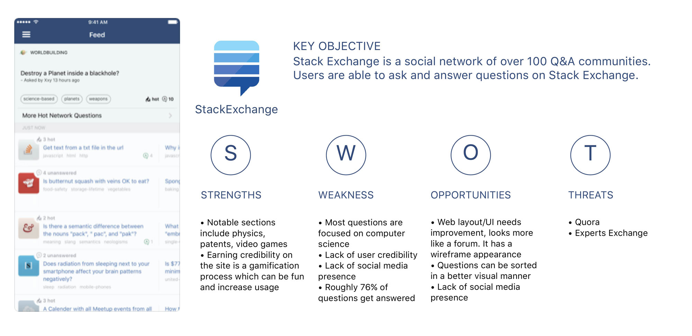

virtuoso
expert advice
No 1 Overview
Virtuoso is a self improvement application that allows users to obtain advice for any questions or concerns they have. The application provides articles and forums for users to acquire information. One of the key features of Virtuoso is the opportunity to connect with a certified expert via video call or messaging.
No 2 Problem Statement
I have observed that there is a lack of an app that caters to advice seekers on a personal and professional level. Users need a way to find help in whatever obstacle they have in the quickest and most efficient way. Search engines are insufficient.
No 3 Hypothesis
We will know this to be true when there are infinite questions being replied to in the most professional manner and video calls with experts increasing in demand on the daily.
No 4Competitive Analysis
Through a competitive analysis, Quora and Stack Exchange were identified as potential competitors. By using a SWOT profile, I was able to identify the advantages and flaws of each competitor.
No 5User Research Analysis
Interviews were held to accomplish the following goals:
- Identify possible procedures a user takes for seeking expert advice.
- Gather opinions on how users feel about Quora, Reddit, and other similar platforms.
- Observe user behavior toward search engines.
- Identify what type of knowledge or advice users seek.
- Observe how often users seek advice.
- Observe why users seek advice.
- Users have search needs on a daily basis.
- Google is the most commonly used search engine.
- Users find Google simple and easy to use.
- Users seek an expert for advice every two weeks.
- Users turn to LinkedIn to provide credited experts.
- Most of the search purposes are work-related or general knowledge.
- Users don’t like tutorials and how to videos when they’re long-winded or superfluous.
- Users find Google to have better search optimization compared to other search engines.
- Users enjoy tutorials and how to videos when they are direct, straight to the point and helpful.
- Users enjoy using Reddit because of the online community, it’s filled with real every day people who can relate to the user.
- Users are not inclined to pay a high amount for video calls with an expert unless the answer cannot be found on the internet.
- User intuitive platform is important even for web use.
- There should be options to turn off filters when viewing answers on Q&A platforms.
- Providing a free or low-cost service would be the best way to draw in users during the beginning stage.
- Creating a points reward system for gift card redemption could be a way to draw in users.
INSIGHTS BASED ON AFFINITY MAPPING
No 6 User Personas
Personas were created to represent the goals and behaviors of my target audience. It allowed me to maintain a user-centered design.
No 7 User Journeys
User journey maps were created for each persona. They provide a visualization of each user's emotional highs and lows and thought process in completing a task.
No 8 User Flows
User flows were created from each journey map. Each user flow illustrates how users would complete a task step by step. This determines what features need to be included in the product.
No 9Information Architecture
The sitemap was the blueprint for the initial creation of the app. It illustrates all possible interactions users can have within the app and provides an overview of necessary screens. Optimal Workshop was used for refining the architecture in the app through a hybrid card sorting exercise. A test was conducted with 9 participants who provided helpful suggestions for organizing data.
No 10 Wireframes
Low Fidelity Wireframes
Rough sketches were made during the initial design process. The following screens were created: Introduction, Sign Up, Log In, LinkedIn pop up, User Selection, Onboarding, Dashboard, Appointments, Profile, Notifications, and Settings.

Mid Fidelity Wireframes
The sketches were transformed into mid fidelity wireframes through Balsamiq. The new wireframes are refined with more detail.
High Fidelity Wireframes
The first set of high fidelity wireframes were made through Sketch. It was a refined version of the mid fidelity wireframes. Invision was used to create the first prototype for user testing.
No 11 Usability Testing
Usability tests were conducted with six participants, five were moderated remotely and one was done in person at the participant’s home. Most of the participants were in the age range of 21 - 25, one was over 40 and another was in the range of 26 - 30. Most of the sessions ran from 20 - 25 minutes. The longest session was almost an hour. For the remote tests, I used my MacBook Pro and communicated through Skype. I recorded the session through Quicktime Player’s screen record feature. For the test done in person, we used an iPhone 6s plus and I used my iPhone 6s to record the session. Affinity mapping and rainbow spreadsheet methods were utilized to analyze the test results.
Goal
The purpose of this study is to access the ease of use within the app. I would like to observe if users can successfully locate forums, search for articles, and most importantly, know how to contact experts and schedule calls. The goal is to ensure the overall usefulness and whether the design needs improvement or not.
Test Objective
Conclusion
Overall the test went pretty well. I received a great amount of feedback which gave me better direction on where to take the app. All the users found the navigation to be pretty straightforward. The experience seems to be mostly positive. Once I add one more screen and tweak around the visual elements and content, the user experience will be much smoother.
No 12A/B PREFERENCE TESTING
After the usability testing, I needed to experiment with the navigation structure and typography sizing of the app. A preference test was conducted with 20 users. The goal was to find out which version participants preferred and to find out the reasoning behind their choices. Based on the results of the test, I would decide which screen I would move forward with.
Results
A total of 20 participants took the preference test. 11 out of 20 preferred design 2 which equated to 55% of the participants. It was a pretty close call. According to UsabilityHub, the difference isn’t statistically significant.
Conclusion
Since the results were such a close call, I will be taking feedback from both sides to make a new dashboard. The new design will include the positive feedback of both designs. I will include the text layout of the design 2 but include the icons and navigation bar of design 1 into the new design.
No 13 Style Guide
No 14 Final design